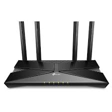
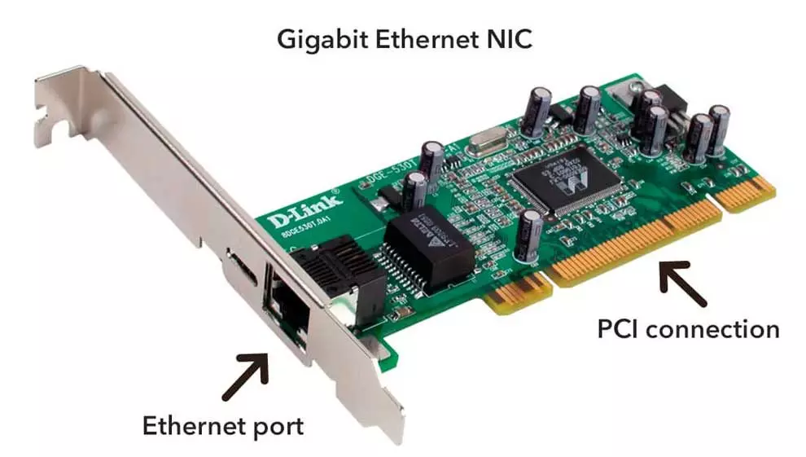
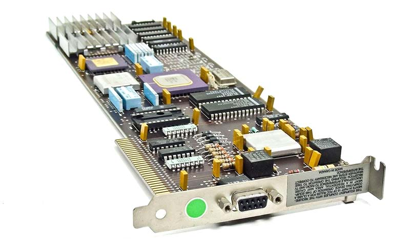
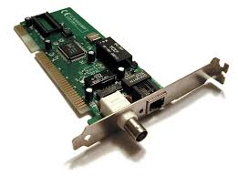
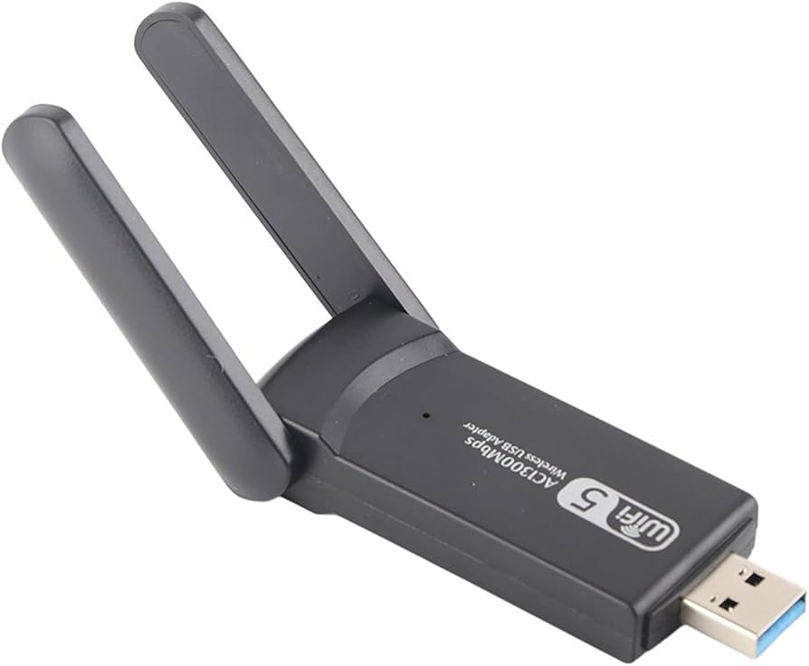
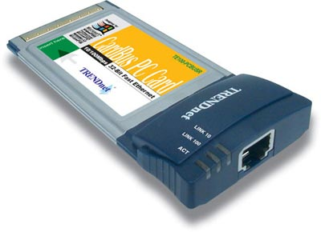

Elementos Activos
Elementos Activos
Son aquellos dispositivos o equipos que se encargan de distribuir en forma activa la información a través de la red, como concentradores, access point, switches, router, entre otros. Además, se encargan de distribuir banda ancha a determinada cantidad de equipos en una red.
La diferencia que existe entre un dispositivo Activo y uno Pasivo es que los dispositivos pasivos se utilizan para interconectar los enlaces de una red de datos mientras que los activos se encargan de distribuir en forma lógica y activa la información atreves de la red.
Switches

Los switches son piezas de construcción clave para cualquier red. Conectan varios dispositivos,
como computadoras, access points inalámbricos, impresoras y servidores; en la misma red dentro
de un edificio o campus.
Un switch permite a los dispositivos conectados compartir información y
comunicarse entre sí.
Switches no administrados.
Un switch de red no administrado está diseñado para que pueda simplemente conectarlo y funcione,
sin necesidad de configuración. Los switches no administrados se usan generalmente para
conectividad básica. En general, se verán en redes domésticas o donde sea que se necesiten unos
cuantos puertos más, como en su escritorio, en un laboratorio o en una sala de conferencias.
Switches administrados
Los switches administrados le ofrecen mayor seguridad y más funciones y flexibilidad, dado que
puede configurarlos para que se adapten a su red. Con este mayor control, puede proteger mejor
su red y mejorar la calidad del servicio para los que acceden a la red.
Concentradores y switch de red
Un concentrador de red es un punto de conexión central para los dispositivos de una red de área
local, o LAN. Pero existe un límite para la cantidad de ancho de banda que los usuarios pueden
compartir en una red basada en concentradores. Cuantos más dispositivos se agreguen al
concentrador de red, más tiempo tardarán los datos en llegar a su destino. Un switch evita estas
y otras limitaciones de los concentradores de red.
Una gran red puede incluir varios switches, que conectan diferentes grupos de sistemas
informáticos entre sí. En general, estos switches están conectados a un router que permite a los
dispositivos conectados acceder a Internet.
¿Qué es un router y cómo funciona en una red?

Mientras que los switches permiten que se comuniquen diferentes dispositivos en una red, los
routers permiten que se comuniquen diferentes redes.
Un router puede conectar computadoras en red que enruta paquetes de datos entre redes
informáticas. Un router puede conectar computadoras en red a Internet, de modo que varios
usuarios puedan compartir una conexión. Los routers permiten conectar redes dentro de una
organización o conectar las redes de varias ubicaciones de las sucursales. Y un router funciona
como un distribuidor. Dirige el tráfico de datos y elige la mejor ruta para que la información
viaje a través de la red, de modo que se transmita de la manera más eficiente posible.
Tarjeta de Red

Una tarjeta de red es un dispositivo que se instala en el interior de un ordenador para que este
pueda conectarse a Internet. Según el tipo de tarjeta, esta puede incluir en su parte posterior
un puerto para introducir el cable de Ethernet o admitir la conexión inalámbrica.
La tarjeta de red se encarga de la preparación, la transferencia y el control de los datos que
se reciben y envían desde el ordenador a Internet o a otros equipos que comparten la misma red.
Es importante mencionar que puede comunicarse también con periféricos como una impresora o un
disco duro externo para agilizar el envío de datos importantes.
Tipos de tarjeta de red:
-

Ethernet
Estas tarjetas incluyen un puerto con el estándar 8P8C y el conector RJ45. Aquí, debes introducir el cable que proviene del router. En la actualidad, permiten conexiones BNC, AUI, MII y GMII.
-
De red inalámbrica

Funcionan a través de wifi.
Hay dos tipos:
~ El primero es externo y se conecta a un BUS vacío y a la placa madre.
~ El segundo viene integrado de fábrica. Debes comprobar el tipo de estándar para el que se diseñaron las tarjetas.
El IEEE 802.11b alcanza más de 400 metros y funciona a 11 MB/s. El IEEE 802.11g tiene el mismo alcance y su velocidad es de 54 MB/s. Finalmente, el IEEE 802.11n presenta una velocidad de 800 MB/s y alcanza los 800 metros. -

Token Ring
Dejaron de utilizarse, ya que costaban bastante más que las otras.
Su conector era el DB-9, aunque se cambió por el RJ-45 en las MAU y las NIC. -

ARCNET
Sus siglas aluden a attached resource computer network.
Se crearon en los años 80 y cayeron en desuso porque tenían una velocidad de conexión máxima muy baja en comparación con las Ethernet.
Se conectan mediante un cable coaxial y se emplean en la industria para la automatización de procesos. -

USB
Se adaptan tanto a una entrada USB como a una de Ethernet.
En el primer caso, incluyen una pequeña antena para captar la red wifi. -

PCMCIA
Se instala en la placa base de los ordenadores portátiles gracias a la ranura homónima.
No incluye una antena.
Interruptor Inteligente Wifi

Un interruptor inteligente WiFi es un interruptor inalámbrico programable que ofrece la misma
funcionalidad que un interruptor tradicional y permite el control y la automatización de la
iluminación.
Los interruptores inteligentes se pueden conectar a un sistema doméstico inteligente y además
permiten a los usuarios controlar sus luces mediante una aplicación móvil, un asistente de voz o
una programación automatizada.
El funcionamiento de los interruptores de luz inteligentes se reduce a un concepto clave: Se
conectan a la red wifi del hogar, lo que permite su gestión y control mediante dispositivos
móviles. Esto hace que los interruptores utilicen la conexión de red para comunicarse con tus
bombillas inteligentes u otros hardware inteligentes.
Access Point

Un access point inalámbrico (WAP) es un dispositivo de red que permite que los dispositivos
con capacidad inalámbrica se conecten a una red cableada. Es más simple y fácil instalar WAP
para conectar todas las computadoras o los dispositivos de la red que usar cables.
El uso de un WAP permite crear una red inalámbrica en una red cableada existente, para admitir
dispositivos inalámbricos.
También puede usar un WAP o extensiones de malla para extender el alcance y la potencia de la
señal de su red inalámbrica a fin de proporcionar una cobertura inalámbrica completa y eliminar
los "puntos sin señal", en especial en edificios u oficinas grandes. Además, puede configurar
los ajustes de WAP con un solo dispositivo.
Quick Links
Popular Links
Newsletter
© Your Site Name. All Rights Reserved. Designed by HTML Codex